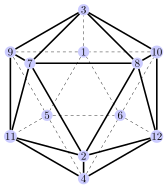

Problemática
Vimos a primeira e mais simples metaheuristica, chamada busca local. Esta classe de algoritmos, no entanto, possui algumas limitações.
Relembrando a busca local
Na busca local, partimos de uma solução inicial, e intensificamos a busca até chegar em um ótimo local.
Relembrando a busca local
Na busca local, partimos de uma solução inicial, e intensificamos a busca até chegar em um ótimo local.
Relembrando a busca local
O que aconteceria se a solução inicial fosse como mostrado acima?
Relembrando a busca local - Problemática
Após a intensificação, a busca chega a um ótimo local que não é o ótimo global.
Relembrando a busca local - Problemática
Após a intensificação, a busca chega a um ótimo local que não é o ótimo global.
Relembrando a busca local - Problemática
Com isso podemos inferir que a busca local é muito sensível à escolha da solução inicial.
Relembrando a busca local - Problemática
Qualquer solução inicial gerada nas áreas delimitadas acima não chegará ao ótimo global.
Paradigma exploração x intensificação
Essa intuição gera o principal paradigma das metaheuristicas, chamado de
exploração x intensificação
do fitness landscape.
Paradigma exploração x intensificação
A intensificação está ligada a exploração intensiva de uma vizinhança (a maior intensificação é dada pela busca local).
Paradigma exploração x intensificação
A exploração está ligada a capacidade de explorar diferentes regiões do fitness landscape. O extremo da exploração é a geração aleatória de soluções, ou seja, a busca aleatória.
Paradigma exploração x intensificação
Paradigma exploração x intensificação
- O design de qualquer metaheuristica deve ponderar o paradigma exploração x intensificação. É necessário conseguir intensificar a busca em algumas regiões ao mesmo tempo que uma grande região do fitness landscape é explorado.
- Os dois conceitos são conflitantes, de forma que uma boa metaheuristica faz um compromisso entre eles.
- A intensificação está relacionada a melhoria continua de uma solução por meio de uma vizinhança.
- O principal objetivo da exploração é evitar que a busca fique presa em ótimos locais.
Formas de evitar ótimos locais
De forma geral, as diferentes abordagens para se evitar ótimos locais são mostradas acima, bem como os algoritmos mais representativos.
Formas de evitar ótimos locais
Nós veremos um representante de cada família de algoritmos.
Inspiração para metaheuristicas
Os criadores de metaheuristicas perceberam que uma inspiração para o design de algoritmos (e o paradigma exploração x intensificação) eficientes pode vir diretamente de associações com fenômenos e comportamentos da própria natureza. Alguns exemplos são mostrados abaixo:
- Recozimento simulado: Imita o comportamento de resfriamento de materiais.
- Colônia de formigas: Imita o comportamento das formigas.
- Algoritmos genéticos: Simula a evolução de uma população ao longo de gerações, com mutação, nascimentos, mortes, etc.
Simulated Annealing
Um desses algoritmos é o chamado Simulated Annealing - SA (recozimento simulado, têmpera simulada). O algoritmo é baseado nos princípios de mecânica estatística, e tem a seguinte associação com um fenômeno físico:
O processo de Annealing visa melhorar as características de um material por meio do aquecimento e posterior refrigeração a uma taxa controlada. A cada redução de temperatura os átomos vão se rearranjando em um estado de menor energia. Ao atingir a temperatura mais baixa e em equilíbrio, o material chega a uma estrutura atômica “perfeita” (com energia = 0). Se o processo for executado de forma correta, o novo material tem boas propriedades físicas.
Simulated Annealing
Inicialmente a estrutura é submetida a uma temperatura alta, de forma que os átomos ficam com muita energia (E).
Simulated Annealing
Inicialmente a estrutura é submetida a uma temperatura alta, de forma que os átomos ficam com muita energia (E). Após algum tempo (mantido na mesma temperatura), a estrutura atinge um estado de equilíbrio.
Simulated Annealing
Inicialmente a estrutura é submetida a uma temperatura alta, de forma que as átomos ficam com muita energia (E). Após algum tempo (mantido na mesma temperatura), a estrutura atinge um estado de equilíbrio.
Simulated Annealing
Após o equilibro ser atingido, a temperatura é reduzida, e o processo é repetido até que um novo estado de equilíbrio de energia seja atingido.
Simulated Annealing
Após o equilibro ser atingido, a temperatura é reduzida, e o processo é repetido até que um novo estado de equilíbrio de energia seja atingido.
Simulated Annealing
O processo é repetido até que uma temperatura final seja atingida. Se o processo foi feito de forma controlada, a estrutura gerada mantém uma configuração de energia minima (min E).
Simulated Annealing
Isso garante boas características mecânicas para o material.
- Conformabilidade
- Ductabilidade
Simulated Annealing
Se a temperatura for reduzida de forma muito brusca, ou o estado de equilíbrio não for atingido, o material final pode apresentar imperfeições na sua estrutura atômica.
Formas de evitar ótimos locais
Simulated Annealing
Como isso é usado no algoritmo?
A ideia de que altas temperaturas geram mais movimento nos átomos é usada para evitar a convergência prematura em ótimos locais. Com altas temperaturas existe uma probabilidade P alta de aceitarmos um movimento na vizinhança que não melhora a solução atual. Ao longo do algoritmo a temperatura vai abaixando e a probabilidade de aceitar uma solução pior é reduzida.
Se a redução de temperatura for muito acelerada, a busca ficará presa em um ótimo local, equivalentemente ao material que foi resfriado muito rapidamente e os átomos ficaram com imperfeições no final do processo de Annealing.
Simulated Annealing
Considerando a solução \(s\). O algoritmo gera uma solução vizinha de forma aleatória.
Simulated Annealing
Quando a solução \(s'\) é pior do que a solução atual, calculamos uma probabilidade de aceitá-la mesmo assim.
Simulated Annealing
Essa probabilidade é influenciada pela temperatura (altas temperaturas aumentam a prob.), e pela diferença entre os valores objetivo \(\Delta E\).
Simulated Annealing
Já quando a temperatura é reduzida a probabilidade de aceitar um movimento pior é menor.
Simulated Annealing
Já quando a temperatura é reduzida a probabilidade de aceitar um movimento pior é menor.
Simulated Annealing
Na comparação com o fenômeno físico, os ótimos locais são materiais com imperfeições e o ótimo global é o material com menor quantidade de energia e boas características.
Pseudocódigo (problema de min.)
Simulated Annealing
Para cada temperatura, a busca continua por um período determinado pelo equilibro. Além das questões comuns de design para as metaheuristicas de solução única (determinação da vizinhança e da solução inicial), as principais decisões do simulated annealing são:
- A função de probabilidade para o aceite: Esse é o principal componente do SA que possibilita piores vizinhos de serem aceitos, mecanismo que tenta evitar a convergência prematura para ótimos locais.
- A função de resfriamento: A função de resfriamento determina a temperatura a cada iteração do algoritmo. Têm papel crucial no sucesso do algoritmo.
Simulated Annealing
Vejamos como a busca e seleção dos vizinhos funcionava no algoritmo de busca local (em um problema de minimização).
Simulated Annealing
A partir de uma solução \(s_1\) geramos sucessivos vizinhos.
Simulated Annealing
A partir de uma solução \(s_1\) geramos sucessivos vizinhos.
Simulated Annealing
A partir de uma solução \(s_1\) geramos sucessivos vizinhos.
Simulated Annealing
Até o momento em que encontramos um vizinho melhor do que a solução atual.
Simulated Annealing
Neste caso fazemos a substituição da solução atual pelo vizinho.
Simulated Annealing
E geramos os vizinhos da nova solução.
Simulated Annealing
E o processo continua até nenhum vizinho ser melhor do que a solução atual.
Simulated Annealing
E o processo continua até nenhum vizinho ser melhor do que a solução atual.
Simulated Annealing
Já no SA, geramos os vizinhos de forma aleatória.
Simulated Annealing
E à cada vizinho calculamos uma probabilidade \(p\) de aceitar a solução.
Simulated Annealing
Com essa probabilidade, mesmo soluções piores do que a atual podem ser aceitas.
Simulated Annealing
Com essa probabilidade, mesmo soluções piores do que a atual podem ser aceitas.
Simulated Annealing
Se a solução for aceita, da mesma forma que na busca local, continuamos gerando seus vizinhos.
Simulated Annealing
Também da mesma forma que a busca local, se um vizinho é melhor que a solução atual, ele é aceito automáticamente (sem usar o mecanismo de probabilidade).
Simulated Annealing
Também da mesma forma que a busca local, se um vizinho é melhor que a solução atual, ele é aceito automáticamente (sem usar o mecanismo de probabilidade).
Simulated Annealing
O calculo da probabilidade deve ser uma função de 2 parâmetros:
- \(\Delta E\): A diferença nos valores objetivos das duas soluções. Quanto maior \(\Delta E\), pior é o vizinho em relação a solução atual, de forma que a probabilidade de aceite deve ser menor.
- Temperatura: Quanto maior a temperatura, maior deve ser a probabilidade de aceite de soluções piores.
Simulated Annealing
Como estamos trabalhando com uma probabilidade \(P(\Delta E, T)\), os axiomas da probabilidade devem ser satisfeitos. Seja:
Mantido a uma temperatura T constante temos:
Com os diferentes valores de \(\Delta E = \{\Delta E_1, \Delta E_2, ...\}\)
- \( P(\Delta E) \geq 1\)
- \(\sum_{\Delta E = -\infty}^{\Delta E = \infty} P(\Delta E) = 1\)
- \(P(\Delta E_1 \cup \Delta E_2 ...) = \sum_{\Delta E = -\infty}^{\Delta E = \infty} P(\Delta E) \)
Simulated Annealing
A função de probabilidade
é chamada de função de distribuição de Boltzmann, e obedece a todos os axiomas, bem como as relações que queremos entre probabilidade, temperatura e valores da função objetivo. Vejamos como a distribuição se comporta com diferentes valores de \(\Delta E\).
Simulated Annealing
Para uma determinada temperatura, a distribuição de Boltzmann tem o seguinte comportamento.
Simulated Annealing
Note que quando o \(\Delta E\) é baixo (a solução vizinha é um pouco pior do que a atual) a probabilidade de aceite é alta.
Simulated Annealing
Já quando \(\Delta E\) aumenta a probabilidade de aceite diminui. Soluções um pouco piores do que a sol. atual são mais prováveis de serem aceitas do que as muito piores.
Simulated Annealing
Acima conseguimos ver a diferença da distribuição para diferentes temperaturas, com \(T_0 > T_1 > T_2\).
Simulated Annealing
Considerando o mesmo \(\Delta E\), para temperaturas maiores a probabilidade de aceite é maior.1
Simulated Annealing
A distribuição de Boltzmann exibe o comportamento que precisamos (isso não impede que outras distribuições sejam utilizadas).
PERGUNTA: Como implementamos esse mecanismo de aceite/rejeição de uma determinada probabilidade?
Simulated Annealing
Como a distribuição de probabilidade, existem muitos esquemas de resfriamento que podemos usar no algoritmo. As questões que devem ser definidas em um esquema são:
- A temperatura inicial \(T_{max}\)
- A temperatura final \(T_{min}\)
- Estado de equilíbrio
- Função de resfriamento da temperatura
Simulated Annealing
Existem diversos estudos e divergências em relação aos 3 primeiros elementos, geralmente os cálculos levam em consideração o tamanho da instância. Por exemplo, problemas maiores precisam de mais iterações para chegar a um estado de equilíbrio, etc...de forma que vamos “testar” esses parâmetros..
Também existem diversas funções de resfriamento da temperatura, usaremos a função geométrica, em que a temperatura da próxima iteração \(T_{i + 1}\) é calculada a partir da temperatura atual \(T_i\) com a seguinte fórmula:
Com \(\alpha \in (0,1)\). Testes mostram que \(\alpha\) deve estar entre 0.5 e 0.99.
Simulated Annealing
ATENÇÃO
O ajuste dos parâmetros (\(T_{max},T_{min}, ...\)) do algoritmo é uma etapa crucial para o bom desempenho do SA. Vá com calma! Comece com valores que não gerem muitas iterações e aumente gradativamente, até encontrar o “equilibro” entre qualidade de soluções e tempo computacional despendido para encontra-las.
Exemplo - TSP
EXEMPLO: Implemente um algoritmo SA para a resolução do TSP. Use as instancias do TSPlib para verificar a sua eficácia. Lembre de rodar diversos testes para calibrar os parâmetros do algoritmo. Os resultados foram melhores ou piores do que a busca local? Salve todos em um arquivo de benchmark para comparação futura.
Atividade I
- Qual é o problema dos algoritmos de busca local? Dê uma sugestão de como podemos melhorar o desempenho deles.
- O que é o paradigma intensificação x exploração em metaheuristicas? Qual é o exemplo extremo de intensificação? E de exploração?
- Explique a relação do algoritmo de Simulated Annealing com o processo de Annealing (recozimento) de materiais.
- Aponte quais componentes do SA são responsáveis pela intensificação e pela exploração do fitness landscape.
- Quais são os parâmetros do algoritmo SA? Como podemos determiná-los?
Atividade II
- Considerando o seu problema escolhido para a disciplina. Encontre 2 artigos científicos que usam SA (ou usam SA como uma parte de outro algoritmo) para resolver o problema. Entenda o algoritmo proposto e identifique suas particularidades:
- Como a sol. inicial é construída?
- Qual é a vizinhança utilizada?
- Como são definidos os parâmetros do SA, função de resfriamento, prob., etc?
- Implemente um algoritmo de SA para o seu problema escolhido.